综合练习 7 · 选择题 1
原题
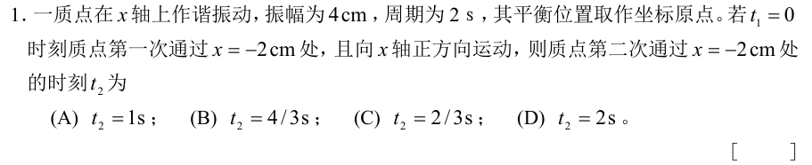
知识点
简谐运动的相位
展开解答与答案
B，4/3 s。ω=π rad/s。第一次 cosθ=−1/2 且 v>0，取 θ=4π/3；第二次取 8π/3，相位推进 4π/3。参考答案首项印成「5．B」，按题序及计算应为「1．B」。
综合练习 7–9 共 90 道题，保留原题、选项与配图。点击原题图片可放大，做完再展开解答。
没有找到对应题目。

简谐运动的相位
B，4/3 s。ω=π rad/s。第一次 cosθ=−1/2 且 v>0，取 θ=4π/3；第二次取 8π/3，相位推进 4π/3。参考答案首项印成「5．B」，按题序及计算应为「1．B」。
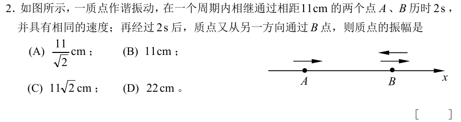
等速点与振幅
A，11/√2 cm。A、B 同向等速，关于平衡位置对称。设向右经过 B 时相位为 −β，则经过 A 时为 −π+β，A→B 推进 π−2β；B→右端→B 推进 2β。两个时段相等，β=π/4，所以 11=2A振 cosβ。
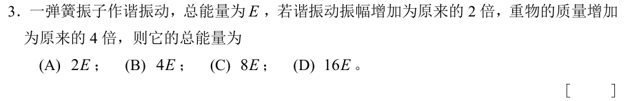
弹簧振子能量
B，4E。E=½kA²，同一个弹簧的 k 不变；质量改变角频率，mω² 仍等于 k。
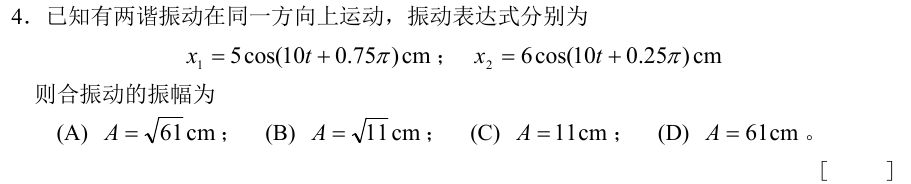
同频叠加
相位差 π/2，交叉项为零，振幅 √(5²+6²)=√61 cm，对应 A。
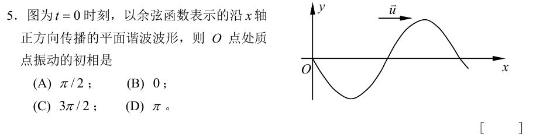
从波形判初相
C，3π/2。O 点位移为零，右行波有 vᵧ=−u∂y/∂x，图上 O 点斜率为负，质点向上。余弦初相可取 −π/2。
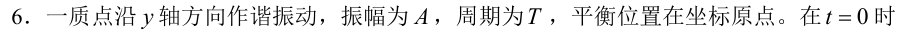
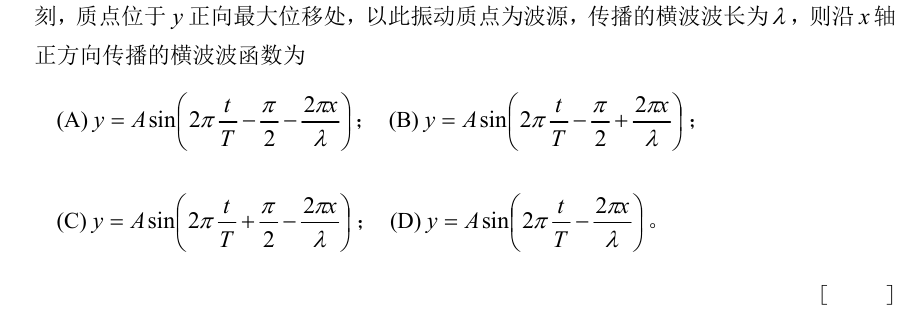
波函数初相和方向
C。t=x=0 时 y=A，正弦初相取 π/2；沿 +x 传播，空间项取 −2πx/λ。
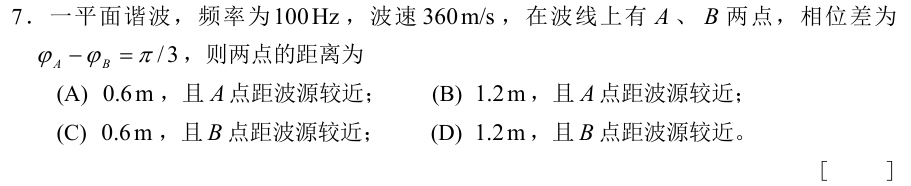
由相位差求距离
A。λ=360/100=3.6 m；π/3 对应 λ/6=0.6 m。沿传播方向相位落后，A 相位超前 B，故 A 离源较近。
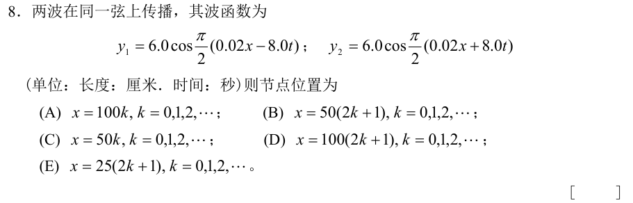
驻波波节
B。注意外层系数是 π/2。和差化积得 y=12cos(0.01πx)cos(4πt)，空间因子为零时 x=50(2n+1) cm。
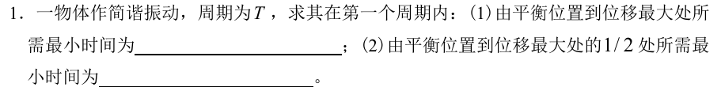
简谐运动用时
T/4；T/12。以出发过平衡位置为 t=0，写 x=A sinωt；到 A 和 A/2 的最早正相位分别为 π/2、π/6。
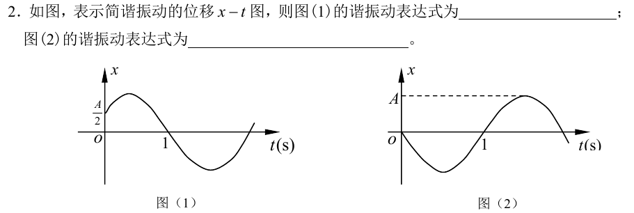
读振动曲线
图(1) x=A cos(5πt/3−π/3)；图(2) x=A cos(πt+π/2)。第一图由 x₀=A/2 且上升取 −π/3；第二图由从零向下取 π/2，再以图中 t=1 s 的位置定 ω。
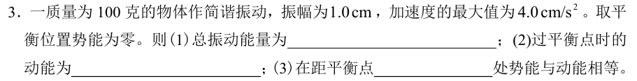
振子能量
2.0×10⁻⁵ J；2.0×10⁻⁵ J；0.707 cm。ω²=aₘ/A=4 s⁻²；总能量 ½mω²A²。平衡点动能等于总能量，等分时距平衡点 A/√2。
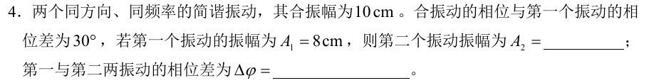
相量三角形
约 5.04 cm、82.5°。令第一相量沿横轴，合相量坐标为 (10cos30°,10sin30°)，减去 (8,0) 得第二相量约 (0.660,5.00)，再求长度与夹角。
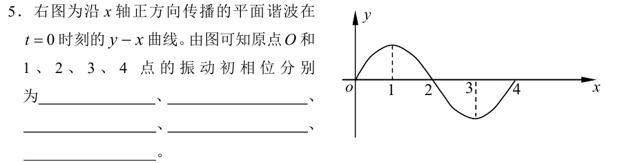
右行波的初相
依图顺序为 π/2、0、−π/2、−π、−3π/2。原点 y=0 且斜率为正，所以质点向下，取 π/2；随后沿 +x 每隔 λ/4 相位减 π/2。
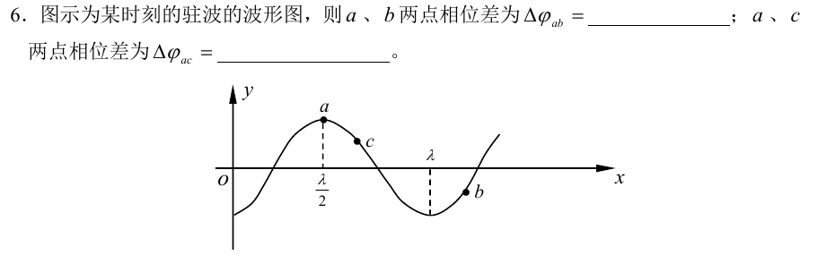
驻波分段相位
a、b 相差 π，a、c 相差 0。每跨一个波节空间因子翻号，跨两个波节恢复同号。
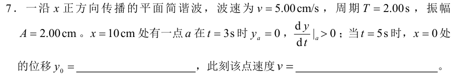
传播延迟与局部运动
y=0，v=2π cm/s≈6.28 cm/s。原点 t=5 s 的状态对应 x=10 cm 处 t=7 s，该处由 t=3 s 到 7 s 恰好过两个周期。
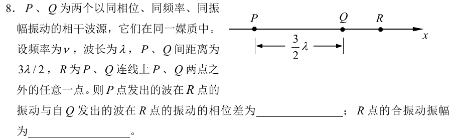
同相源与路程差
按图中 R 在 Q 右侧，φRP−φRQ=−3π（等价于 π），合振幅为 0。P 的路程多 3λ/2，到达时落后 3π；若反向定义相位差则为 +3π。
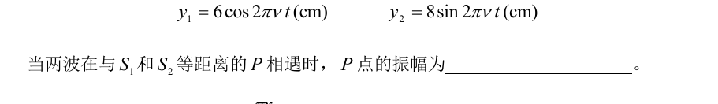
等路程的两波叠加
10 cm。等路程不改变两波的相位差；sinθ=cos(θ−π/2)，故合振幅 √(6²+8²)。
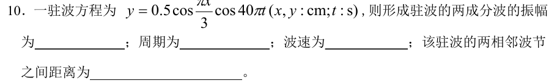
驻波读参数
0.25 cm、0.05 s、120 cm/s、3 cm。空间项为 cos(πx/3)，时间项 cos40πt；成分波振幅为系数的一半，λ=6 cm，u=λ/T。
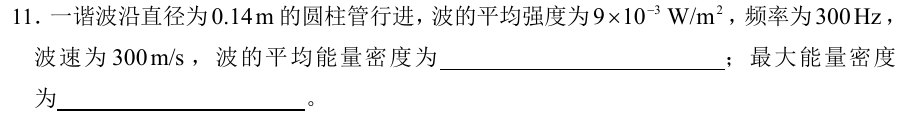
波强与能量密度
平均 3×10⁻⁵ J/m³，最大 6×10⁻⁵ J/m³。用 I=w̄u；简谐波瞬时能量密度随 sin² 变化，其峰值为平均值两倍。
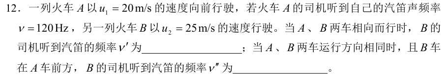
两车的多普勒效应
以声速 340 m/s 计，相向约 137 Hz，同向且 B 在前约 118 Hz。相向用 120(340+25)/(340−20)；同向 B 远离声源方向，用 120(340−25)/(340−20)。原题未给声速，此处采用常用近似。
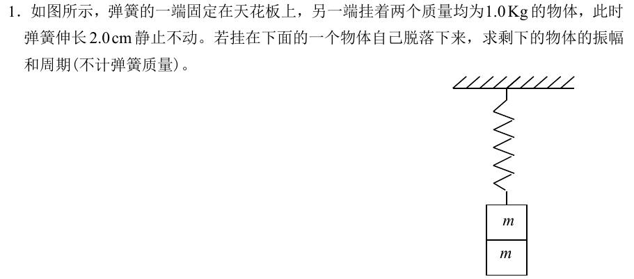
脱落后的平衡位置
振幅 1.0 cm，周期约 0.20 s。初始两块平衡给 k=2mg/0.02=980 N/m；脱落后平衡伸长减为 1.0 cm，剩余物体从静止释放，初位移即振幅。T=2π√(m/k)。
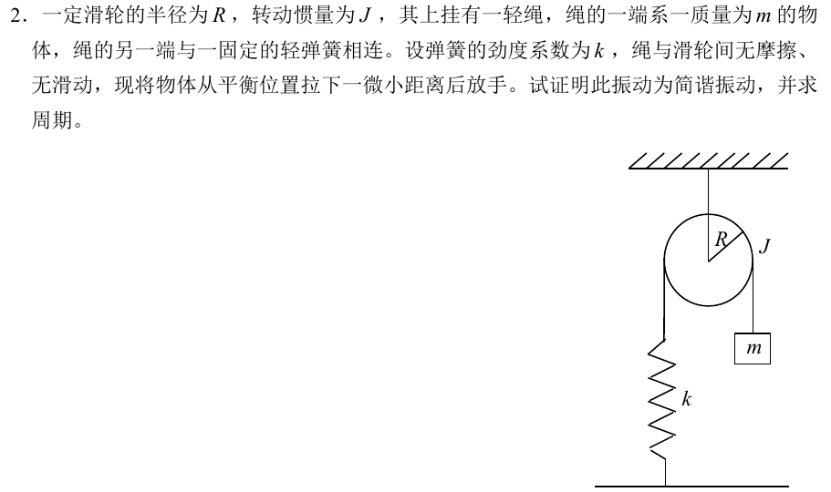
带转动惯量的弹簧振子
以平衡位置为零，消去两侧张力，用角加速度 α=x″/R 得 (m+J/R²)x″=−kx。故为简谐运动，T=2π√[(m+J/R²)/k]。按题意采用绳与滑轮不打滑的约束；有张力差时接触需能传递切向力。
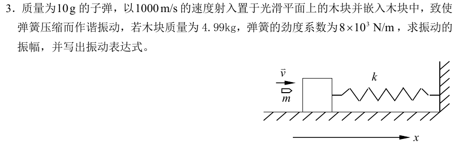
碰撞与后续振动
碰撞时动量守恒，嵌入后的速度为 0.010×1000/5.00=2 m/s。其后 ω=√(8000/5)=40 rad/s，A=v₀/ω=0.050 m。以子弹前进为正，x=0.050 sin40t m。
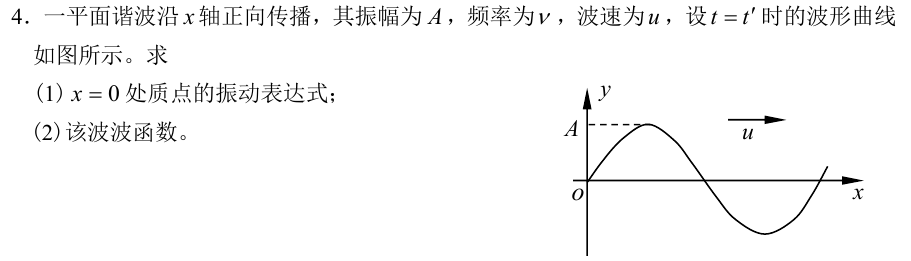
由指定时刻波形写波函数
t=t′ 时原点 y=0，图上斜率为正，右行波使该点向下，故 y₀=A cos[2πν(t−t′)+π/2]。再将 t 替换为 t−x/u 得 y(x,t)。
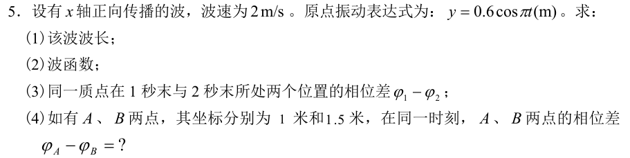
同点时间差与同时时间相位
λ=4 m；y=0.6cos[π(t−x/2)] m。同一点的 φ₁−φ₂=π(1−2)=−π；同一时刻 φA−φB=−π(1−1.5)/2=π/4。
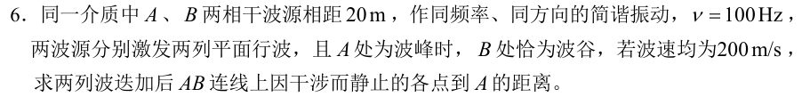
反相源的干涉零点
λ=200/100=2 m。设 x 为到 A 的距离，段内路程差 rA−rB=2x−20；源相差 π，完全相消要求路程差为整波长，故 x=0,1,…,20 m。完全静止还需两列波在该处振幅相同，参考解答按等幅模型处理。延长线上路程差恒为 ±20 m，若也计入则处处相消。
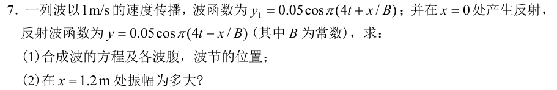
反射形成驻波
ω=4π，u=1，故 k=4π、B=1/4 m。合波 y=0.10cos(4πx)cos(4πt) m。波腹 x=n/4 m，波节 x=(2n+1)/8 m，取介质实际一侧。x=1.2 m 的振幅约 0.081 m。
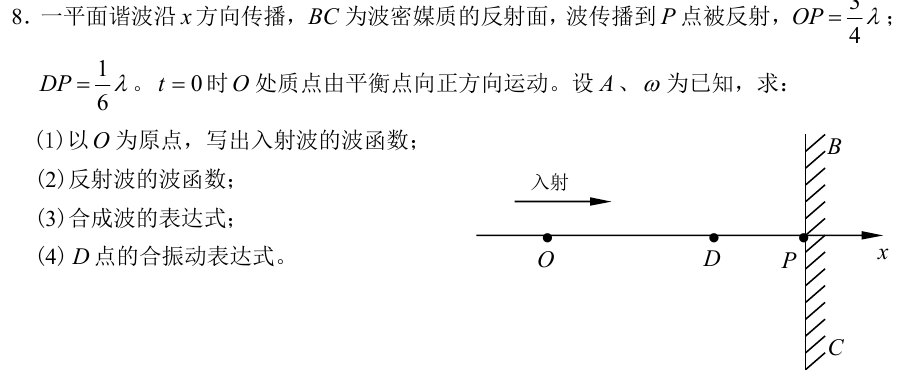
反射点相位条件
令 k=2π/λ。入射 y₁=A sin(ωt−kx)；在 P=3λ/4 处反相反射，得到 y₂=A sin(ωt+kx)。合波 y=2A cos(kx)sinωt。D 坐标为 7λ/12，故 yD=−√3 A sinωt。
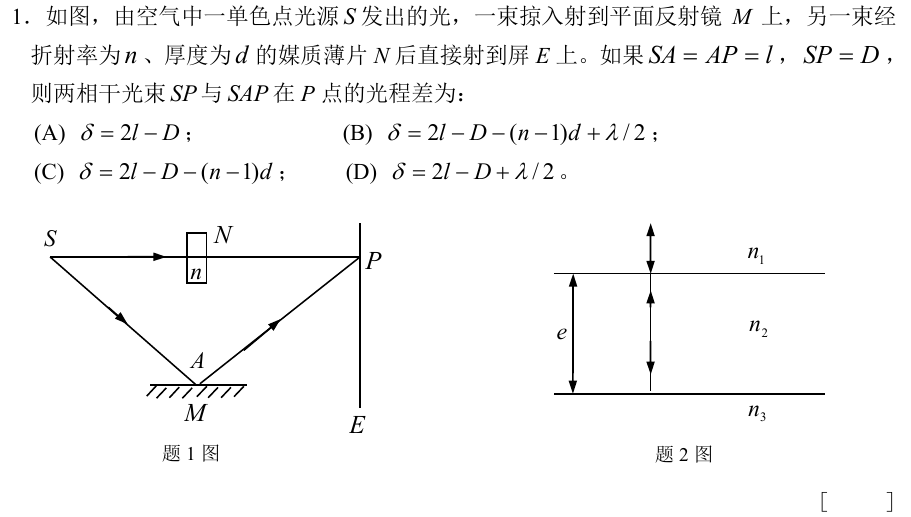
洛埃镜与薄片光程
B。反射路的几何长度为 2l，计入反射半波损失 λ/2；直达路长 D，再加薄片引入的 (n−1)d。反射路减直达路得 2l−D−(n−1)d+λ/2。
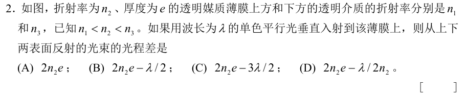
薄膜反射相位
A，2n₂e。n₁<n₂<n₃，两次反射均从低折射率侧射向高折射率侧，各有 π 跳变，相对跳变为零，只剩膜内往返光程。
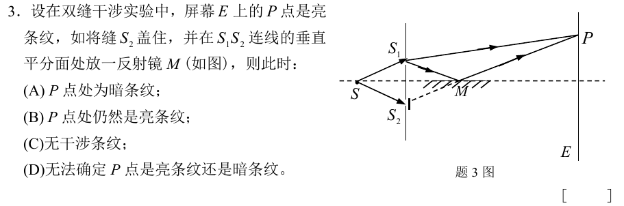
虚光源与半波损失
A。反射镜中 S₁ 的像与原 S₂ 重合，几何光程差不变；反射额外引入 π，原来的亮纹变暗。
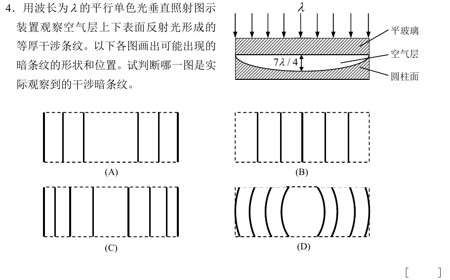
圆柱面等厚干涉
C。厚度只随横向位置变化，暗纹沿圆柱轴方向为直线。暗纹厚度 e=mλ/2，最大厚度 7λ/4，中心没有暗纹；越靠边厚度变化越快，条纹越密。
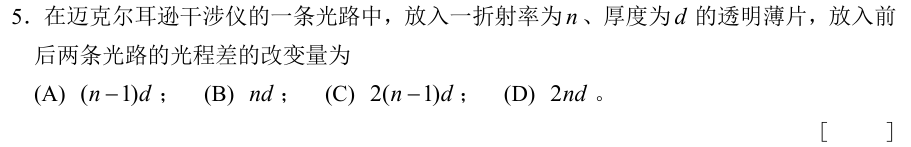
迈克耳孙双程光路
C，2(n−1)d。薄片替换等厚空气，单程增量为 (n−1)d，往返要乘二。
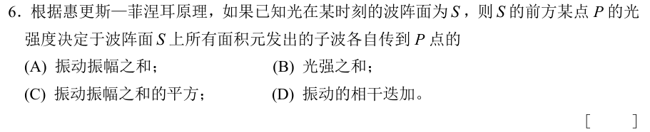
惠更斯—菲涅耳原理
D。各面元的子波有不同的到达相位，先按复振幅相干相加，再对合振幅取模平方求强度。
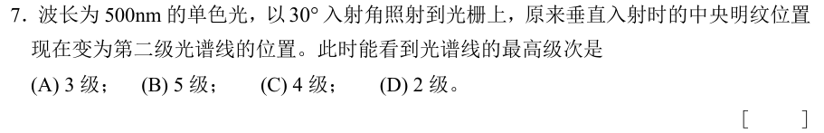
斜入射光栅级次
B，5 级。用带符号角写 d(sinθ−sin i)=mλ。θ=0 时 |m|=2，i=30°，所以 d=4λ。取 i=+30° 时 m∈(−6,2)，排除沿光栅面的 6 级，最高绝对级次为 5。
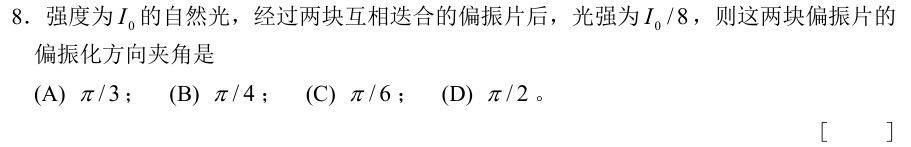
两片偏振片
A，π/3。第一片把自然光降为 I₀/2，第二片按马吕斯定律乘 cos²θ。由 cos²θ=1/4 得两透振轴锐夹角 60°。
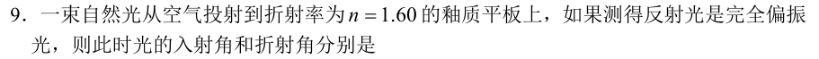
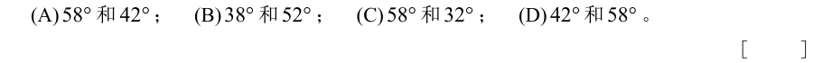
布儒斯特角
C，约 58°、32°。tan iᴮ=1.60，且布儒斯特条件下反射光与折射光垂直，故 r=90°−iᴮ。
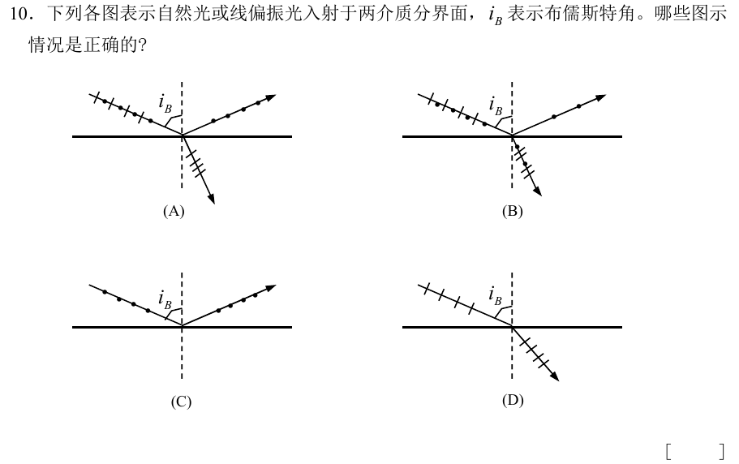
反射光的偏振方向
B、D。在布儒斯特角，平行于入射面的 p 分量不反射；若入射光只有 p 分量就无反射束。若有 s 分量，反射束只含垂直于入射面的 s 分量，据此逐图判断。
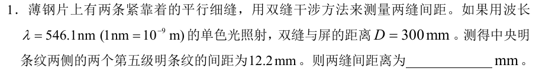
双缝测间距
0.134 mm。两侧第 5 级亮纹跨 10 个间隔，Δx=12.2/10 mm。用 d=λD/Δx。
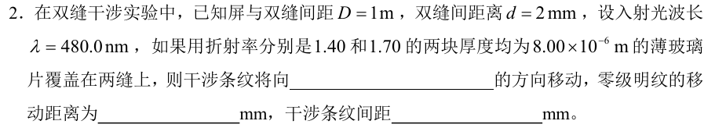
插片导致条纹平移
向折射率较大的那一缝移动 1.20 mm；条纹间距 0.240 mm。附加光程差 Δ=(1.70−1.40)×8 μm=2.40 μm，零级用几何光程差补偿；平移量为 DΔ/d，间距仍为 λD/d。
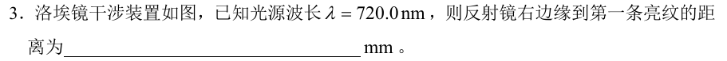
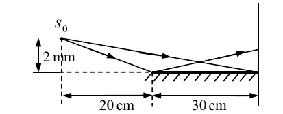
洛埃镜第一亮纹
以镜面与屏的交点为零，首亮纹高度 0.0450 mm。镜像和真实光源相距 4 mm，到屏的轴向距离为 0.50 m。反射有 π 跳变，首亮纹满足几何光程差 λ/2，故 x≈λD/(2×4 mm)。若从反射光与直达光实际重叠区的下边界开始计数，还须检查光束遮挡。
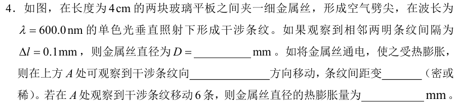
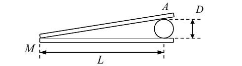
空气劈尖与热膨胀
直径 0.12 mm；条纹向薄端移（图中沿斜面向左下），间距变密；膨胀量 0.0018 mm。由 Δl=λL/(2D) 求初始直径。厚度增加时，同一级纹要移向较薄位置；在粗端厚度增加 6λ/2。
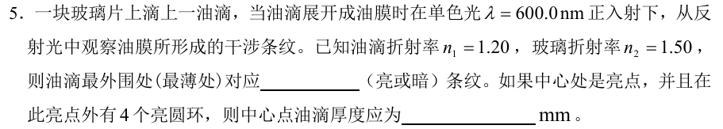
油膜等厚干涉
最薄处亮；中心厚度 0.0010 mm。空气→油与油→玻璃的两束反射各有 π 跳变，反射明纹满足 2ne=mλ。最薄外缘为 m=0，中心对应 m=4（外圈四条亮环含外缘）。
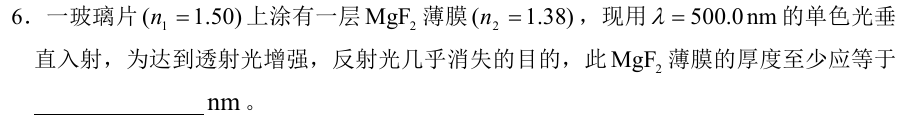
增透膜最小厚度
90.6 nm。两次反射相对相位跳变为零，垂直入射要反射相消，最薄取 2ne=λ/2，得 e=λ/(4n)。
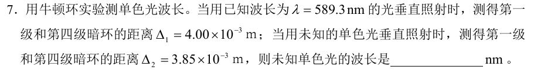
牛顿环的波长比例
约 545.9 nm。固定装置中同级暗环的半径差随 √λ 变化，所以 λ未知=589.3×(3.85/4.00)² nm。
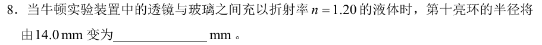
液体牛顿环
约 12.8 mm。对于同一级亮环，r²∝1/n，半径由 14.0 mm 变为 14.0/√1.20 mm。
单缝光线相位差
2π；暗。图中全缝端点光程差 2λ，光线 1 和 3 横向相隔半个缝宽，故其光程差 λ。全缝满足二级暗纹条件。
斜入射的符号
30°；入射角约 −11.95°（按参考答案的符号约定），入射光线与衍射光线在法线异侧。垂直入射时 sinθ=3λ/d=0.5；若改用传播方向带符号角，d(sinθ−sin i)=3λ，得 sin i=sin45°−0.5≈0.2071，两套角度约定的符号相反。
半波带数与亮纹
7 个，第 3 级亮纹（半波带近似）。a sinφ=3.5λ，除以 λ/2 得 7；近似亮纹条件为 a sinφ=(m+½)λ。
圆孔分辨率
至少约 195 mm。用瑞利判据 θₘᵢₙ≈1.22λ/D，取 D≥1.22×560 nm/(3.50×10⁻⁶)。
布拉格衍射
晶面间距约 0.276 nm，未知波长约 0.166 nm。一级峰满足 2d sinθ=λ，角度为相对晶面的掠射角。此题保留，书面通知注明 X 射线衍射不作考点。
有损偏振片
无吸收为 3/8=0.375；各片对透振分量吸收 10% 时为 (0.9)²×3/8≈0.304。两片各乘一次透过率。
双折射的投影
Iₑ/Iₒ=cot²20°≈7.55。e 光电场在主截面方向，o 光垂直主截面，分别投影再平方。此题保留，书面通知注明双折射不作考点。
双缝细条纹和衍射包络
间距 λf/d=2.4 mm。中央衍射亮区满足 |sinθ|<λ/a；干涉亮纹为 d sinθ=mλ，因此 |m|<d/a=5。可见 m=0、±1、±2、±3、±4 共 9 条，±5 落在包络暗纹上。
白光单缝亮纹
按半波带近似，a sinθ≈ax/f=2100 nm，λ≈4200/(2m+1) nm。可见范围内 m=3、4，分别约 600.0 nm、466.7 nm，半波带数 7、9。精确侧极大应解 tanβ=β，题解采用课堂近似。原题只有三问。
双缝斜入射
先由 Δx=λD/d 得 d=1.00 mm，正入射二级亮纹在 ±0.60 mm。斜入射后条纹中心随入射方向偏移，带符号角满足 sinθ=sin i±2λ/d。参考答案用小角度投影给同侧约 42.98 和 44.18 mm；用精确屏坐标 x=D tanθ 得约 43.14 和 44.35 mm，反向入射则左右镜像。
圆锥空气膜的等厚纹
e≈rα，接触点暗。反射有一次半波损失，暗环 rₘ=mλ/(2α)，亮环 rₘ=(2m+1)λ/(4α)，m=0,1,…，都是同心且同类等距。m=2 暗环膜厚 600 nm。充水后非零暗环半径缩为原来的 1/1.33，减少约 24.8%。
光栅缺级反求缝宽
d=2λ/sin30°=2400 nm。第三级主峰与单缝第 q 级暗纹重合，a=q d/3。取 0<a<d，q=1、2，故 a=800 或 1600 nm。±4 在 90° 掠射方向，有限屏不收；±3 缺级，可见 0、±1、±2。
黑体的吸收与发射
D。理想黑体吸收全部入射辐射，也按自身温度发射宽频热辐射；可见范围的颜色不能单独决定是否为黑体。
光电效应判断
D，(2)(4)。阈值 ν₀=W/h，超过阈值后 K最大=hν−W。同频时在通常线性响应条件下，光强翻倍使饱和光电流翻倍；异频等强并不保证光子数或光电子数相等。
光子的能量与动量
A，按题中旧式质量记号 E/c²=hν/c²，动量 p=h/λ。现代用语中光子的静质量为零，hν/c² 是能量对应的质量当量。
电子加速与物质波
A，约 940 V。低速时 eU=p²/(2mₑ)，p=h/λ。代入 λ=0.04 nm 得 U≈940 V。
电子单缝衍射
A，d≈2Rh/(ap)。第一暗纹满足 a sinθ=λ=h/p；中央亮区跨 ±θ，在小角度下宽约 2Rθ。
波函数与概率密度
D。ψ 是概率振幅，模平方 |ψ|² 是位置概率密度。在小体积 dV 内找到粒子的概率为 |ψ|²dV。
不确定关系的来源
C。局域化要求叠加不同波数，波数分布变宽意味着 pₓ=ħkₓ 的分布变宽。ΔxΔpₓ≥ħ/2 描述态本身的分布。
把波函数平方
A，1/(2a)。代 x=5a/6 后相位为 5π/4，cos²=1/2，归一化系数的平方为 1/a。
量子隧穿
C。低于有限势垒高度时，波函数在势垒内衰减但仍能延伸到另一侧。透射概率与高度和宽度都有关。
谐振子的基态
A，½ħω。能级 Eₙ=(n+½)ħω，n=0,1,…，取 n=0 即得零点能。
轨道角动量最小值
A，0。L=√[l(l+1)]ħ，氢原子的 s 态允许 l=0。
3d 的量子数
D，(3,2,0,+½)。3 指 n=3，d 指 l=2，允许 mₗ=−2 到 2，mₛ=±½。
氩原子电子组态
C，1s²2s²2p⁶3s²3p⁶。电子数逐层累加 2+2+6+2+6=18，3p 已填满。
辨认可分态与纠缠态
B。Bell 态如 (|00⟩+|11⟩)/√2 无法分解为两个单量子比特纯态的张量积。测量一边可改变对另一边的条件预测，但不传递可控信号。
量子隐形传态
B 是错误说法。发送者做联合测量，再经典传送测量结果；接收者据此做校正以恢复未知态。协议不会额外保留原态的完美副本。
同波长比较能量
动量大小相等；光子总能量小于电子总能量。由 p=h/λ 得同 p；光子 E=pc，电子 E=√(p²c²+m₀²c⁴)。
非相对论物质波
λ=h/√(2m₀eU)。电子从静止出发，eU=½m₀v²=p²/(2m₀)，再代 λ=h/p。
波长精度与位置不确定量
下限约 0.024 m。由 p=h/λ 得 Δp≈(h/λ)(Δλ/λ)，代入 Δx≥ħ/(2Δp)=λ/[4π(Δλ/λ)]。
基态区间概率
约 0.196。代 n=1，积分 P=∫₀^(a/3)(2/a)sin²(πx/a)dx。利用 sin²θ=(1−cos2θ)/2 得 P=1/3−√3/(4π)。
零点能与能级差
½ħω；ħω。把 n=0 代入 Eₙ=(n+½)ħω，再做相邻两能级之差。
n=3 时的角动量
0、√2ħ、√6ħ。n=3 允许 l=0、1、2，逐一代 L=√[l(l+1)]ħ。
自旋的两种投影
2 个。给定 n、l、mₗ 后，剩下 mₛ=+½、−½。
角动量在磁场方向的投影
0、±ħ、±2ħ、±3ħ。l=3 时 mₗ 取 −3 到 3 的整数，Lz=mₗħ。
同壳层电子容量
2n²。对 l=0 到 n−1 的轨道数 2l+1 求和得 n²，再乘每个轨道的 2 个自旋态。
Hadamard 门作用
H|1⟩=(|0⟩−|1⟩)/√2。|1⟩ 的列向量为 (0,1)ᵀ，因此结果是 H 的第二列。
光子的能量与动量
红光 E≈3.31×10⁻¹⁹ J，p≈1.10×10⁻²⁷ kg·m/s；X 射线 E≈1.99×10⁻¹⁵ J，p≈6.63×10⁻²⁴ kg·m/s。分别把 600 nm 和 0.1 nm 换成米，再用 E=hc/λ、p=h/λ。
由动量通量求光压
法向光压：全反射为 2P cos²φ/c，理想吸收为 P cos²φ/c。每秒入射光子数为 PS cosφ/(ħω)，另一个 cosφ 来自单个光子动量的法向分量；反射使该分量反向，转移量翻倍。可在真空中用扭秤承载等面积的镜面与吸收面，等强照射并观察力矩差。
复波函数归一化
ψ=A/(1+ix)，故 |ψ|²=A²/(1+x²)。全实轴积分为 A²π，令其等于 1 得 A=1/√π；密度为 1/[π(1+x²)]，在 x=0 最大，值为 1/π。
相对论物质波公式
设 K=eU，由 (m₀c²+K)²=p²c²+m₀²c⁴ 得 p²=2m₀eU[1+eU/(2m₀c²)]。再用 λ=h/p 即得题式。当 K≪m₀c² 时可用低速近似。电子静能约 511 keV，电压允许多大取决于所需误差。
经典与量子势垒
经典粒子能量低于势垒高度时会折返。量子态在有限势垒内有衰减尾部，穿透到另一侧的概率可大于零；势垒增厚时通常迅速减小。
泡利与基态填充
泡利原理要求同一原子内不能有两电子四个量子数完全相同；同一空间轨道最多容纳自旋投影相反的两个电子。基态在允许的排布中取总能量最低者。
锂、硼、氩的基态
Li：1s²2s¹；B：1s²2s²2p¹；Ar：1s²2s²2p⁶3s²3p⁶。逐组核对电子数为 3、5、18。